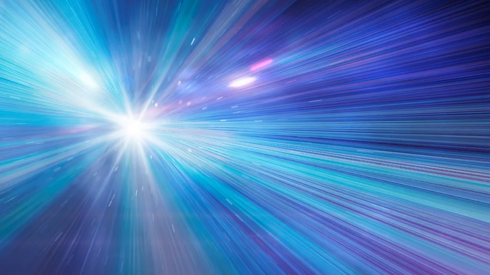

Posted 1d ago
These cosmic rays typically come from the extremely distant universe,
apparently from ultrapowerful events such as supernovas and quasars.
Astronomers have a new way to study energetic particles that constantly
bombard Earth from space,called cosmic rays. The new method proposes the
detailed analysis
of showers of secondary particles created when cosmic rays
belt Earth's atmosphere, as a
lens to better understand them.
Cosmic rays are difficult to track back to a source because the charged particles
that comprise them are deflected time and again by magnetic fields they
encounter as they
travel through space at near the speed of light. That means
that their sources, which lie outside the solar system, tend to be shrouded in mystery.
Suspects for cosmic ray sources include supernovas, but these particles seem
to be too energetic
to have been launched even by the explosion of massive stars.
Other suspects include active
galactic nuclei or quasars powered by feeding
supermassive black holes, gamma-ray bursts, or
even exotic dark matter, but
astronomers have yet to find a smoking gun that points to these
sources definitively.
What is better understood is what happens when these charged cosmic particles
belt Earth. When
these charged particles strike particles in our planet's atmosphere,
they create a huge
"air shower" of secondary particles that rain down to Earth's surface.
When thousands,
millions or even billions of these particles hit the ground, it's
called an extensive
air shower.
In the new study, scientists found a way of using precise observations of these particle
showers taken with the Subaru Telescope, situated atop the Mauna Kea volcano in Hawaii,
to learn more about them and the cosmic rays that trigger them.